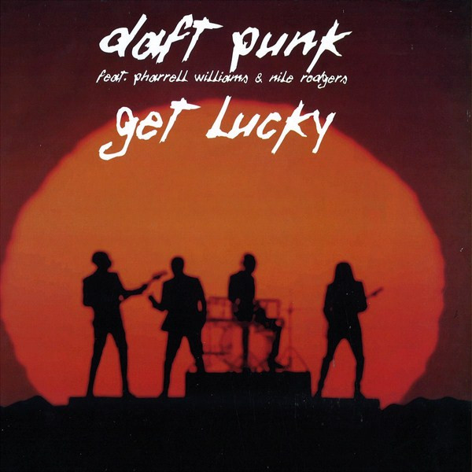
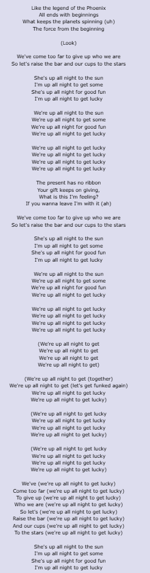

Track 1: Get Lucky - Daft Punk
Information:
Song Name: Get Lucky
Artist(s): Daft Punk
Extra Info: Featuring Pharrel Williams & Nile Rodgers
Cover:
Video:
Lyrics:
Analysis / Reasoning:
Get Lucky, by Daft Punk, highlights Holden’s first couple of chapters. Holden repeatedly mentions themes of “getting lucky” and how “good luck” is a terrible thing to say. “I’m pretty sure he yelled ‘Good Luck!’ at me. I hope not. I’d never yell ‘Good Luck!’ at anybody. It sounds terrible, when you think about it.” (Salinger 19). “I was lucky. All of a sudden I thought of something that helped make me know I was getting the hell out.” (Salinger 7). Holden also states that he “gets lucky” when he arrives at the train station and he doesn’t wait a while. Another similarity extended beyond the lyrics of Daft Punk’s Get Lucky to Holden Caulfield's journey are themes of “staying up all night.” Caulfield stays up most of the night packing and getting ready to leave Pencey Prep, hoping to “get lucky” by finding his way through New York City. “The present has no ribbon. Your gift keeps on giving” refers to the money that Holden’s grandma keeps on sending him. “... (my grandma) keeps on sending me money for my birthday about four times a year.” (Salinger 59). Finally, the second lyric of Get Lucky is “All ends with beginnings.” This is an homage to Holden closing the cycle of being kicked out of schools to finally escape once and for all. Holden’s pursuit of getting lucky feels more like an escape from his situation than joy, a detail that is clearly illustrated throughout the first couple of chapters of The Catcher In The Rye.